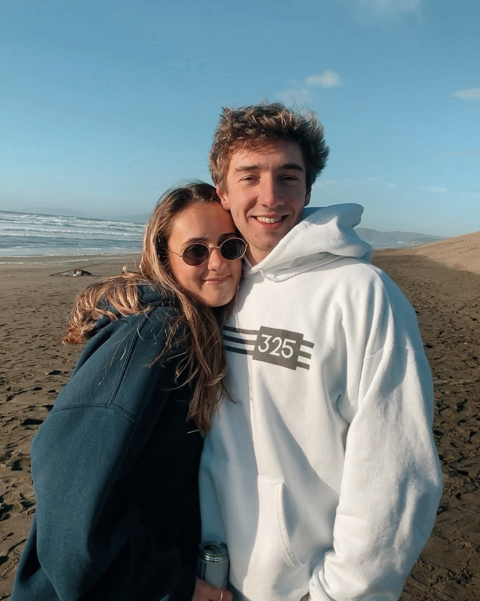
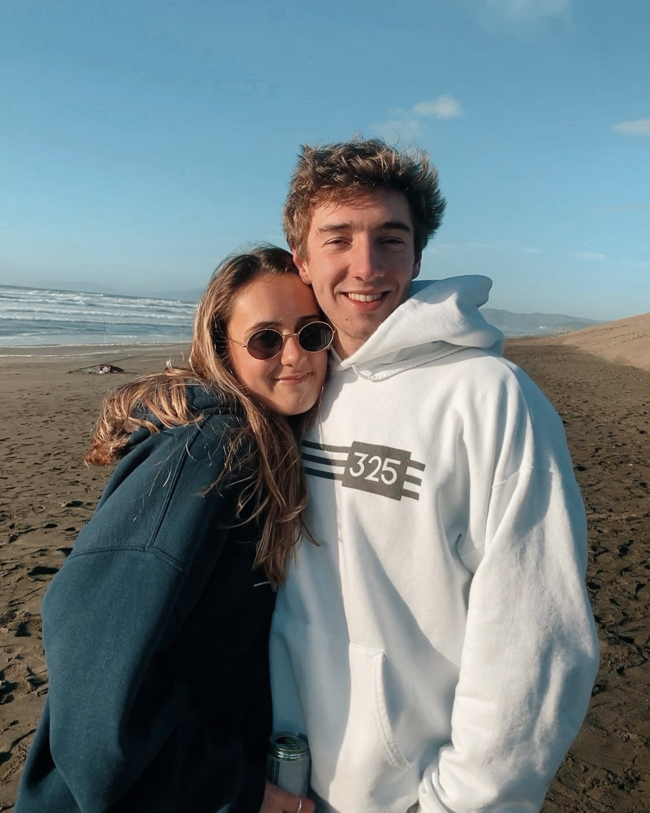
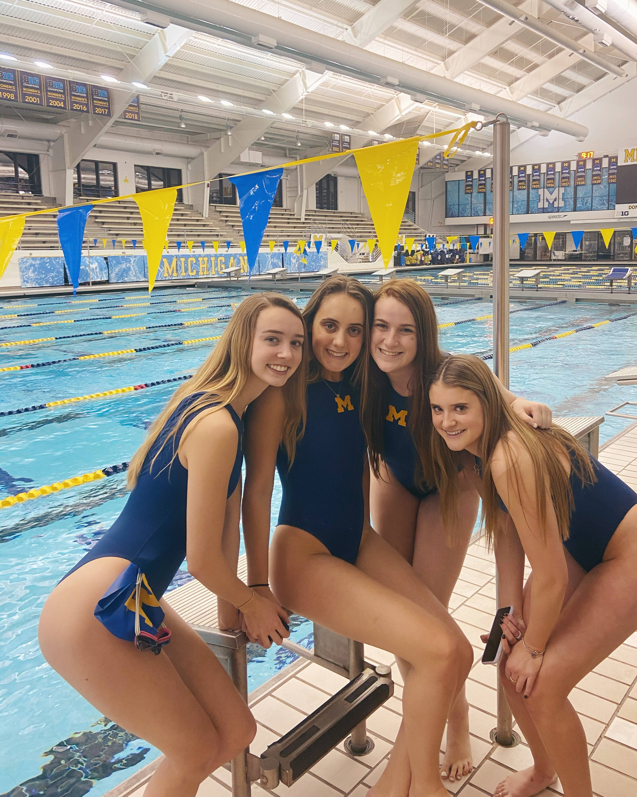
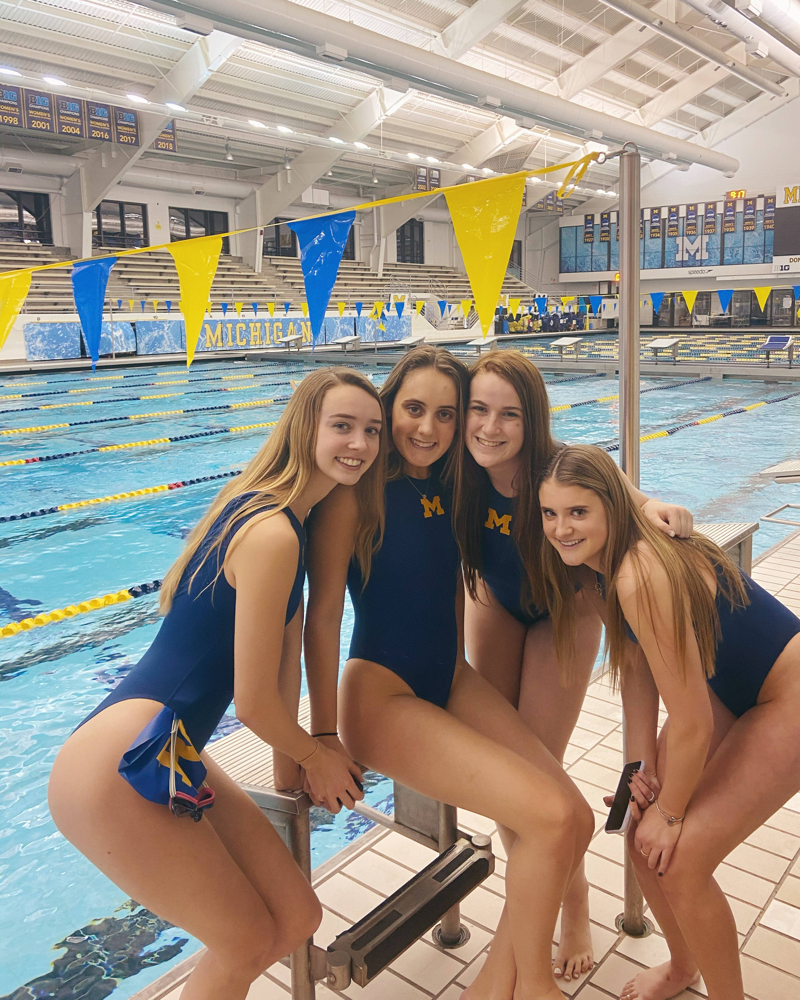

I'm Madeleine, it's nice to meet you!
I am a sophomore in the School of Information studying UX Design. I am originally from the San Francisco Bay Area, but I love Ann Arbor and all it has to offer. As of now, I hope to graduate in 3 years, achieve a 1-year Masters in Information, and then pursue a career in Product Design or Product Management. I would also love to continue my love for fitness in some way.
My Wellness Journey
“Wellness” is not something that can simply be achieved, but I have been striving to live a healthier lifestyle. After a five-year long battle with depression and anxiety, I was finally diagnosed in January and am now being treated with proper medication. To complement this, I have started working out 7 days a week and eating a healthier diet. My favorite workouts are SoulCycle, swimming, HIIT, and hiking. I look forward to seeing what I can achieve in the future for both my physical and mental wellbeing.
Summer 2021 Goals
In order to maintain my physical health, I’ve set a series of fitness goals for myself to achieve this summer. It won’t be easy, but I look forward to pushing myself to new limits while trying new things. Here are my goals:
- Get my personal training certification
- Complete my first half marathon
- Complete my first sprint triathlon
- Reach 50 SoulCycle rides
Here are some of my favorite people, places, and things!
 

 
